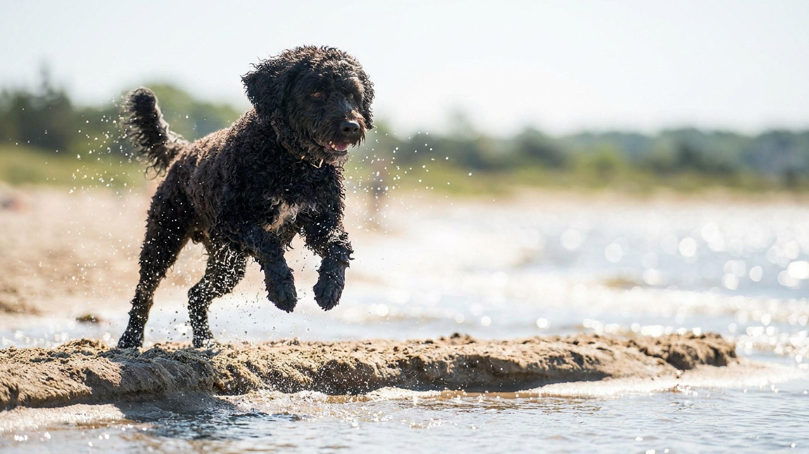

Породу прославил пёс в Белом доме, а выводили её — нырять за сорванными сетями у рыбаков Атлантики. За модными кудрями прячется выносливый рабочий пёс, которому мало двух прогулок вокруг дома. Разбираем характер, миф о «гипоаллергенности», сколько с ней возни и что проверить у щенка.
🐾 У вас португальская водяная собака?
AnimaLife соберёт уход под породу: к каким болезням есть склонность, что проверять по возрасту, чем кормить и когда пора к врачу. Бесплатно, прямо в мессенджере.
Собрать план ухода → Собрать в MAX →
У вас iPhone? AnimaLife есть в App Store
Португальскую водяную собаку (по-португальски — cão de água) веками держали на рыбацких лодках вдоль атлантического побережья. Она загоняла рыбу в сети, доставала упавшие снасти, ныряла за уплывшим уловом и передавала сообщения с судна на судно. Отсюда — перепонки между пальцами, водоотталкивающая кудрявая шерсть и азарт к любой воде. Это не декоративная деталь: пёс и сегодня рвётся плавать и работать.
Это одна из самых сообразительных и контактных пород среди рабочих собак. Плюсы и их цена:
Спокойным домоседам порода не подойдёт: недогруженная «водяная» быстро превращает квартиру в полигон.
При правильном воспитании это отличная семейная собака. С детьми она обычно терпелива и игрива, но крупный энергичный пёс может случайно сбить с ног малыша в порыве игры — знакомство и правила нужны с первого дня. С другими собаками и даже кошками уживается неплохо, если социализирована с щенячьего возраста. А вот надолго оставлять её одну в квартире — плохая идея: это компанейская порода, и изоляция для неё тяжелее, чем для многих других собак. Идеальный хозяин — тот, кто много времени проводит дома или берёт пса с собой.
Породу часто продают как гипоаллергенную — и это лишь полуправда. Кудрявая шерсть почти не линяет и мало разносит волос по квартире. Но аллергию у людей вызывает не сама шерсть, а белки в слюне и частичках кожи, и они никуда не деваются. Низкая линька снижает количество аллергена в воздухе, но не убирает его. Если в семье есть аллергик, честная проверка одна — провести несколько часов рядом с конкретной собакой до покупки, а не верить обещаниям продавца.
Шерсть без линьки — это не «меньше забот», а другая забота. Кудри не выпадают сами, поэтому их надо вычёсывать и регулярно стричь, иначе образуются колтуны.
У щенка спросите документы на здоровье родителей: у породы известны наследственные проблемы глаз и суставов, поэтому ответственные заводчики делают генетические тесты и проверяют суставы. Смотрите на активность помёта и готовность заводчика подробно расспросить вас об образе жизни — это хороший знак.
Материал носит информационный характер и не заменяет очную консультацию ветеринара.
🐾 Ваш питомец — португальская водяная собака?
Заведите профиль в AnimaLife: приложение запомнит породу, возраст и вес и будет подсказывать по уходу именно для неё. Вопросы AI-ветеринару — круглосуточно и бесплатно.
Завести профиль → Завести в MAX →
У вас iPhone? AnimaLife есть в App Store
🐾 Понравился разбор?
Подпишитесь на канал — каждый день разбираем по одному тревожному симптому у кошек и собак: что в пределах нормы, а когда пора к врачу. Подпишитесь, чтобы не пропустить разбор, который может спасти здоровье вашего питомца.